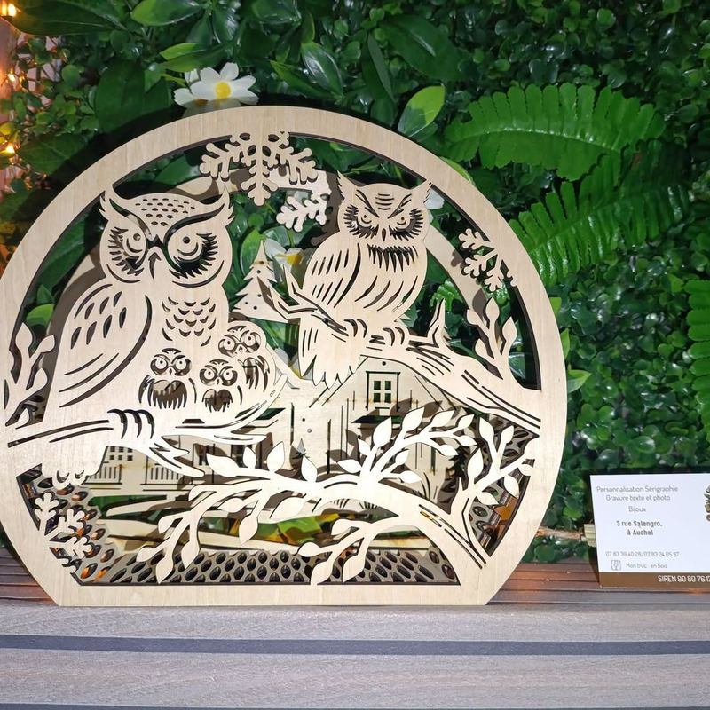
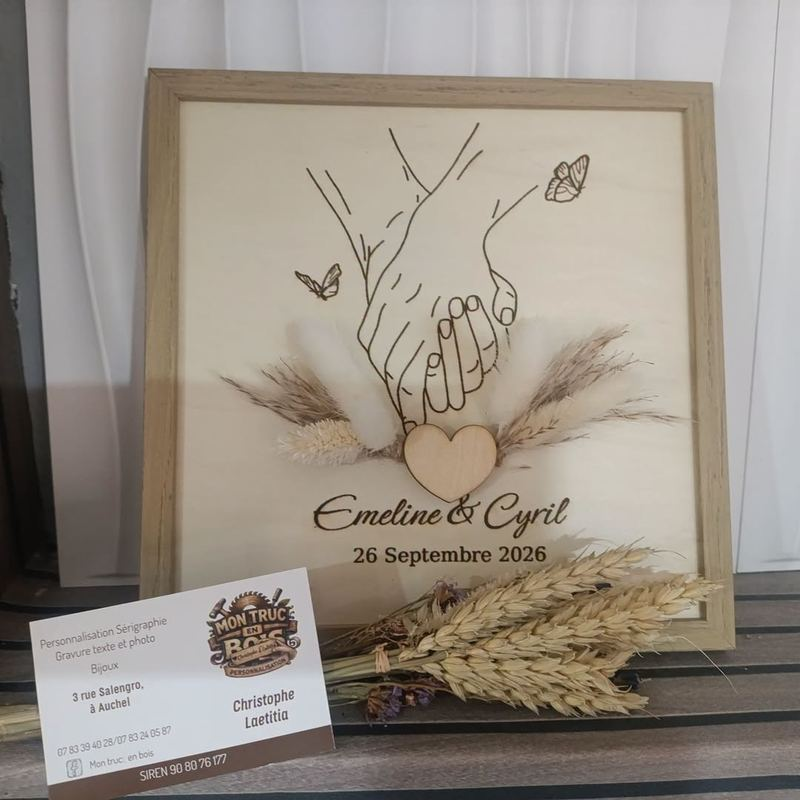
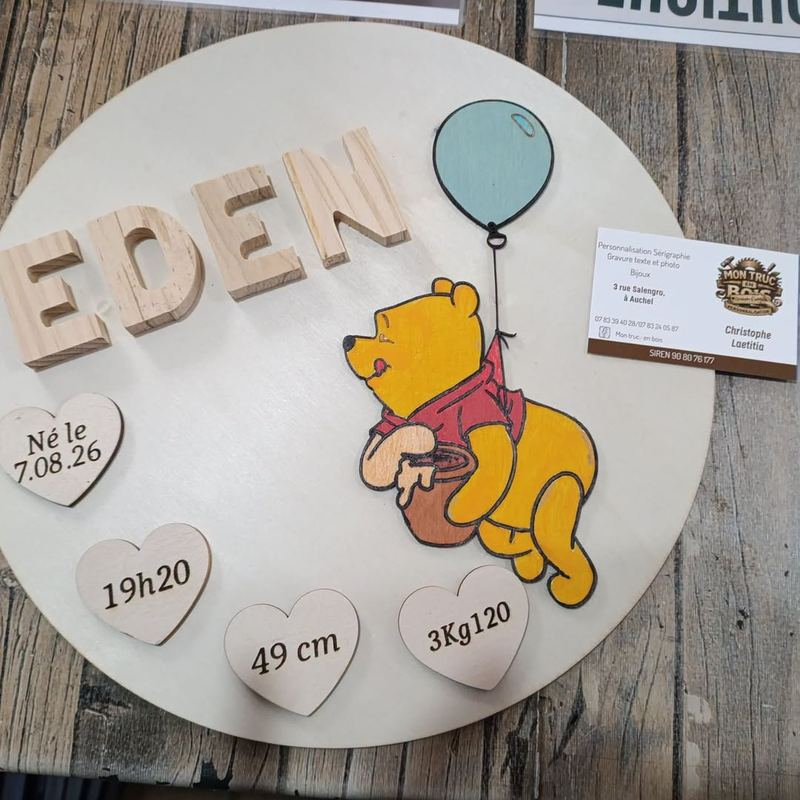
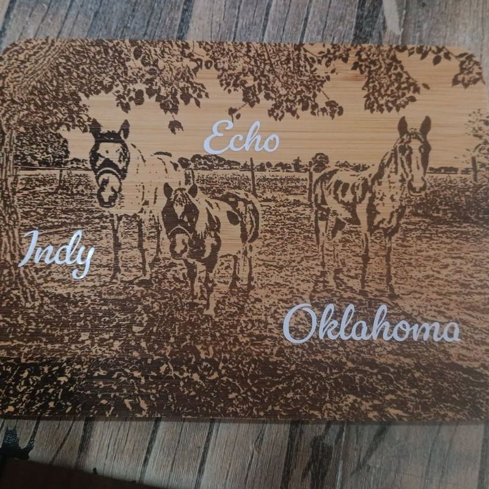
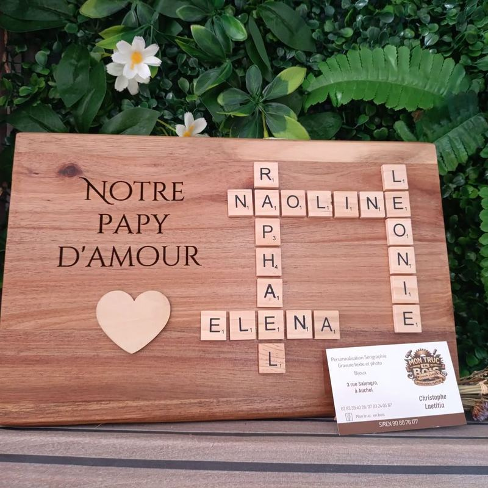
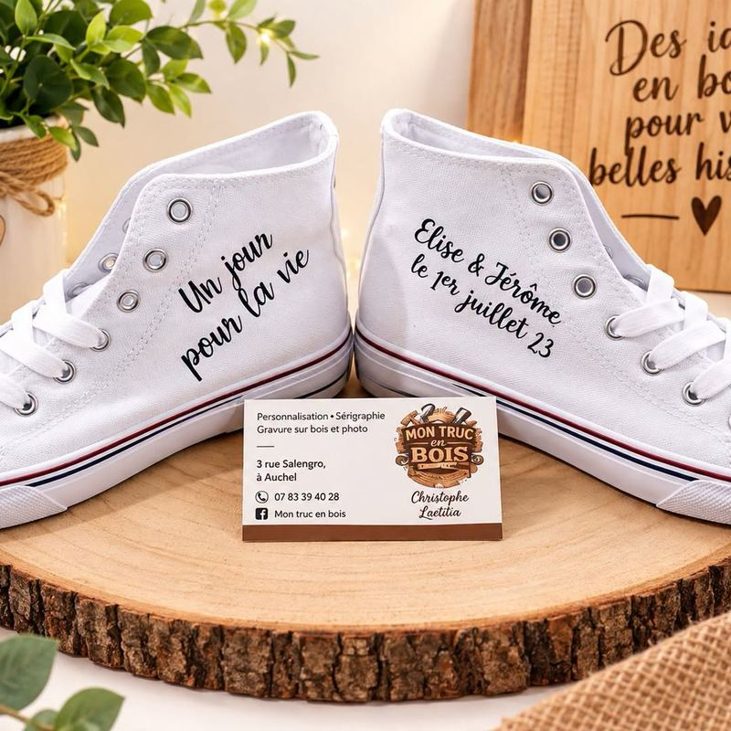
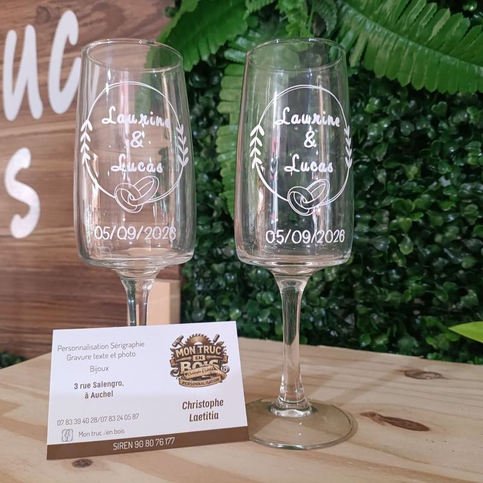
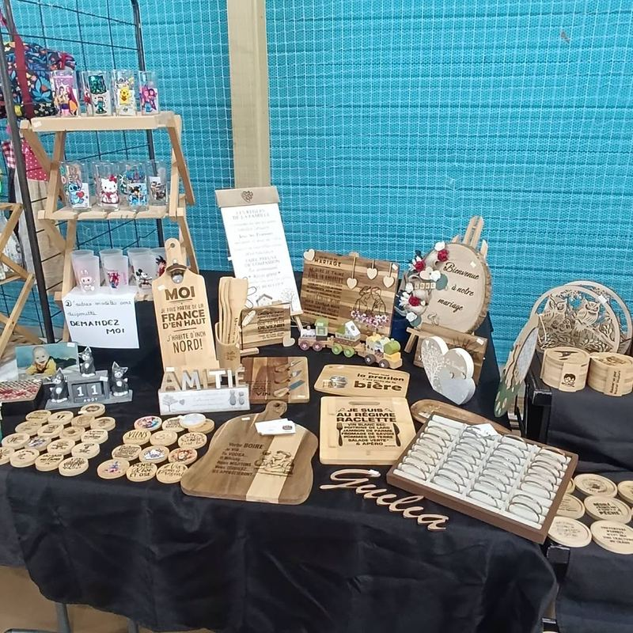

Qui sommes-nous ?
Depuis 2024, vous accueille au cœur d'Auchel, au . Christophe et Laetitia y imaginent et fabriquent des cadeaux personnalisés pour toutes les occasions : naissance, baptême, mariage, fête des pères et des mères, départ en retraite, Noël…
Gravure laser sur bois, verre et ardoise, impression sur mugs, verres et textiles, bijoux gravés : chaque pièce est unique et préparée avec soin. Particuliers, commerçants, associations et entreprises : nous réalisons aussi bien une pièce unique que des séries.
Vous nous croiserez aussi sur les salons, marchés et fêtes de la région !
Parlons de votre projet
Nos savoir-faire
🪵 Gravure texte & photo
Gravure laser précise sur bois, verre, ardoise : textes, dessins, logos et même vos photos.
☕ Sérigraphie & impression
Mugs, verres, plaques voiture, tirelires, baskets : vos visuels imprimés à l'unité ou en série.
🎉 Événements
Plaques de naissance, panneaux de bienvenue, urnes et souvenirs de mariage assortis à votre thème.
💍 Bijoux
Bracelets gravés, boîtes à bijoux et porte-clés : des petites attentions qui ont du sens.
Quelques réalisations
Retrouvez toutes nos nouveautés chaque semaine sur notre page Facebook.








Suivez nos dernières créations
Nouveautés, coulisses de la boutique, dates de fermeture et idées cadeaux sont publiées régulièrement sur notre page.
Voir notre page Facebook